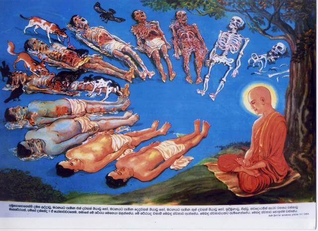

人们穷尽一生珍爱自己的肉身，抹脂涂膏，百般呵护。同时又对异性美色孜孜追求，不折手段，至死不休。人们对美色的贪欲，达到了无以复加的程度。那么美色究竟是什么呢？其实佛教智慧早就告诉我们，所谓的肉身美色无非就是一个“臭皮囊”，是一个会移动的“垃圾箱”，看似美丽光洁细腻的皮肤包裹着的无非是屎尿粪便、肥油脓血而已，正所谓“九孔常流不洁物”。
人生的痛苦都是来源于贪欲，贪欲若除断，痛苦自然消亡。为了达到消除贪欲的这个目标，可以因人而异地采取两种不净观的方式：一种是如实观的不净观，即五不净观，指的是观察人生真正的实相，从种子到现前整个身体都是不净的；另一种是假想观的不净观，即九想观，指的是通过对人生最后面临死亡时情景的想象，发现生命最终的过程和结局也是不净的。无论采取哪一种方式，只要能够观想得起来，则对眼前的任何美景色欲都会深入观察到其前因后果，自然就不生贪欲，同时伴随贪欲而生起的痛苦也就自然瓦解了。
九想观就是九种假设的观想，主要是提醒我们要往后看，看到自己最终的结局，或者提醒我们看看所贪欲的对象（异性）最终的结局，都难免要经历种种不净苦空无我的事实，从而使自己对将来的生命灰飞烟灭深感苦空，与今世的纠缠和烦恼一刀两断。
具体观法：静坐下来之后，运用自己的觉察力和专注力，静虑思维，止观并重，定慧等持。一方面保持稳定的情绪，另一方面保持清明的觉察力，从人人必须经历的死亡开始设想下去，假设自己（或所贪对象）就是这样地按照一个接一个的情景而变化，就会产生新的一种力量，即去除贪欲的力量。久而久之，一切能够生起贪欲的情境都慢慢被净化了，自己的身心就会发生巨大的变化，从而增长了定力和智慧。

第一：新死想。静静地观想，一个刚死的人，直挺挺地身体仰卧，寒气透骨，毫无知觉。当回头想想，我这个贪财恋色的身体，将来死后也是这个样子。
第二：青瘀想。静观还没入殓的尸体，停尸一日到七日间，黑气散溢，转成青紫色肿胀，十分可怕。当回想我这个美貌的身体，将来死后还不是一样。
第三：脓血想。静观死人开始腐烂流脓，烂尸肉块块崩溃，肠胃流出，当念我这个风流的身体，将来死后也是这般。
第四：绛汁观。静观腐烂之尸，停积久后，尸体开始流出黄色汁液，臭不可闻。当回过头来想想自己，我这肌肤香洁的身体，将来也必然会变成尸烂流汁、臭秽不堪的样子。
第五：虫啖想。静观腐尸停放久后，遍体生虫，这些无数的虫在尸体的每个部位钻来钻去，导致尸体骨节内犹如蜂巢般成了许多空洞。想想自己的身体，将来也必然变成这样的惨状。
第六：筋缠想。静观腐尸的皮肉，被无数虫钻吃咬尽，只剩下筋缠连着骨头，犹如绳子捆着木柴，维持不散。当回头想像自己，我这曾经或企图偷香窃玉的身体，将来也必然变成这种模样。
第七：骨散想。静观死后的筋已经烂坏，骨头开始掉落四处。当回头想想，我这高尚富贵的身体，终有一天必然变成这个样子。
第八：烧焦想。静观死尸，被火焚烧，曲缩在地上，被烧得有些焦黑、有些生烂，令人不忍观看。当回头想想，我这纵然会写盖世文章的身体，将来也很可能变成这个样子。
第九：枯骨想。静观坟墓，经久破损，墓内的骨头也暴露于外，散落满地，被日晒风吹雨淋，骨头日久变成白色或枯黄，任由路人、狗兽等践踏糟蹋。当回头想想，我这韶广易老的身体，将来也必然变成这么凄凉啊！

以上九想观，如能时常作观，对肉体爱欲的执迷必可破除，内心也渐能清净，对人生的看法也能比较达观开朗，进一步甚至可以悟道，解脱生死。
人想死亡日，欲火顿清凉。愚人若闻此，愁眉叹不详。究竟百年后，同入烬毁场。菩萨九想观，苦海大津梁。